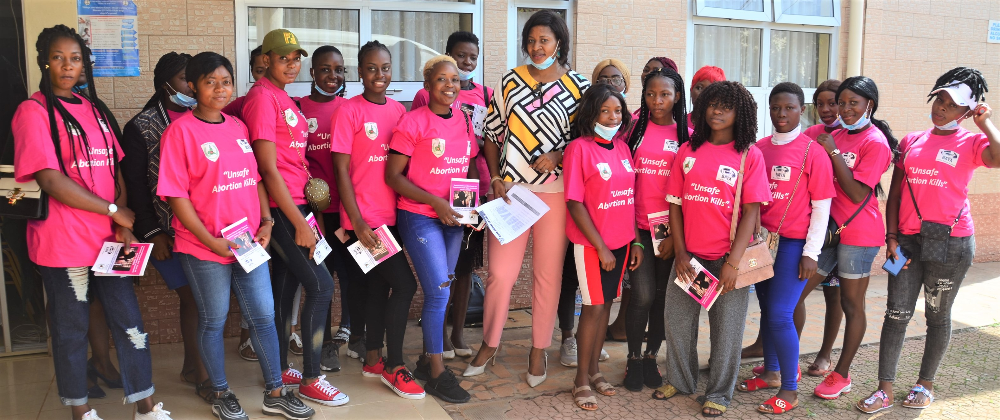
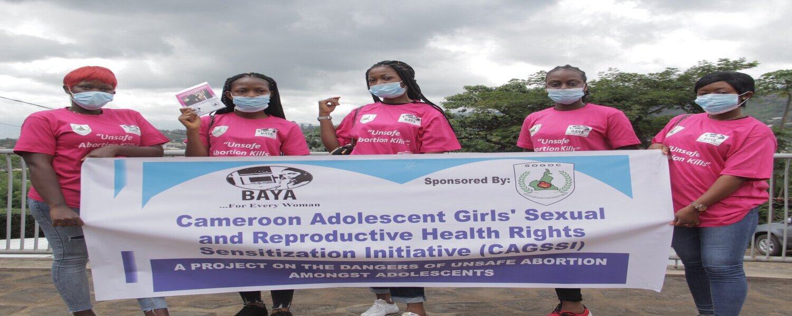

Empowering underpriviledged young girls and women
Call our hot line to report an offence or register for a training program: +237674063012
BAYA is adding its voice in educating young girls and their parents through a door to door sensitization campaign thanks to sponsors like the MTV Staying Alive Foundation UK.
"Remember love should not hurt"
Survivng Domestic Violence
Most often people ask me if I started The Hope Center Cameroon because I have once been a survivor of domestic violence. I tell them NO. We all in one way or the other have suffered from the effects of domestic violence or have contributed towards it. We have seen our friends, neighbours and family members suffer but we have kept quiet either because of fear or because we consider it not our issue . Even those who have spoken up for others have been given bad names. But the truth is someone needs to STAND UP for others....... I grew up in an abusive home where, years later after I came to know more about domestic violence, I came to realize that my mum is a SURVIVOR. I can remember vividly as a kid I saw her on some days looking very sad and she Even cried at times and wished she were dead after having an encounter(s) with my dad. She went as far as singing songs (Take Me Lord just as I am) begging on God to take her life away. The emotional trauma she went through is indescribable, but she endured for years and only. God alone knows how she overcame all these to be the strong woman she is today. Each time I go down memory lane to think of the sacrifices she made for my siblings and I to be who we are today despite all the odds, I get that burning desires in me to rekindle hope in the many 'broken' girls and women out there. To rekindle the hope they have lost and the Hope Center is out to do just that. It would sound surprising to many when they read this part of my Story but the intention is not to blame anyone for anything. The intention is for you to 'see the silver lining in every dark cloud'; to understand your worth as a human being and to break through the odds knowing that your life is not dependent on any man / woman but GOD.
"Sex is not a taboo subject, let's talk sex at home."
Sexual harrasment at home
I was raised by my uncle and his wife in a cordial family set up in the North Region of Cameroon, Garoua to be precise. Being a soldier, my uncle often lodged his colleagues who came from remote villages to receive their salaries every month end. I can recall having being sexually harassed on three different occasions by his friends. I particularly recall the case of one of his friend (who is of blessed memory and dare I say sadly that he died of AIDS) who always looked at me in an unusual manner whenever he came around and loved slapping my buttocks whenever I passed beside him....... At the time I was just 9 years old but looked much older because of my height. One day he came around in the absence of my uncle and wife, took out a 500 frs bank note from his khaki pocket and held it out.He told me to come and take it but only if we could do something together. At that point I understood something wasn't right. I didn't move an inch. I managed to ask him what he wanted us to do and he said “You mean to tell me you don't know what big people do, a man and a woman when they are alone?” I can never forget those words. My heart was beating so fast yet I managed, in my embarrassment to quickly sneak out using the back door and ran for my dear life.in my embarrassment to quickly sneak out using the back door and ran for my dear life.in my embarrassment to quickly sneak out using the back door and ran for my dear life. I never told my uncle or his wife and since that day, I never felt comfortable again in the presence of this my uncle's friend. How was I supposed to tell them? How will I start? Will anyone believe me? What if he used his gun on me? What If my guardians decided to call me a bad or spoilt child? All of these thoughts made me to remain silent. My actions towards the man could have been a clue but no one noticed. I believe that if my guardians had had sex education with me at home, I would have been able to reveal that shameless man. This is why I encourage every parent or guardian to start having sexual and reproductive health talks at home with their kids as early Teach them the parts of their body and the differences between male and female sex organs. Tell them how private their private parts are and that no one should touch them. Tell them to report any form of sexual harassment to you the parents.
"unprotected sex is not woth the risk"
HIV/AIDS is out there
As we sat there waiting for our results, I couldn't hide my fears as thoughts of all the unprotected sex I have had in my life came flooding through my mind. There was this particular girl, an ex, who passed away a few months after we broke up and rumor had it that she was HIV positive. I could feel the sweat sliding down my spine as I recounted the number of times we slept together without protection. My parents could notice my trembling but I couldn't care less; If it weren't for them and the damn DV program I wouldn't be here in the first place....... At long last the doctor called us in and …………. I was safe. Words can't begin to express what I went through that day… it was by far the most traumatic 30 minutes wait in my entire 21 years of existence. As we left the hospital, I made the decision never again to engage in unprotected sex.I even vowed never again to have sex but may be it was just the adrenaline.